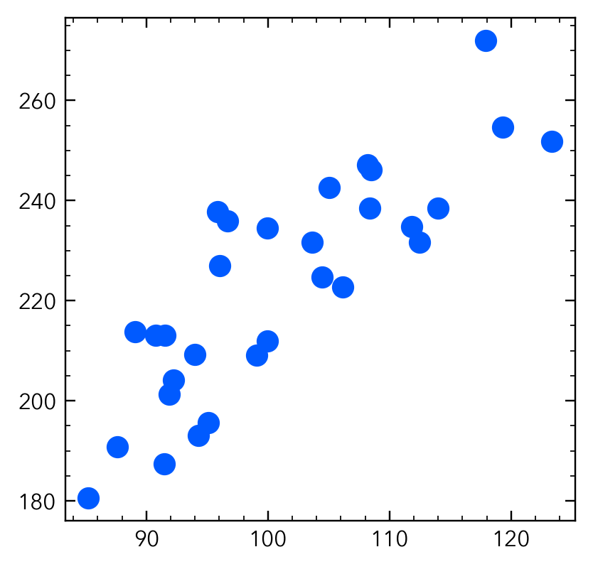
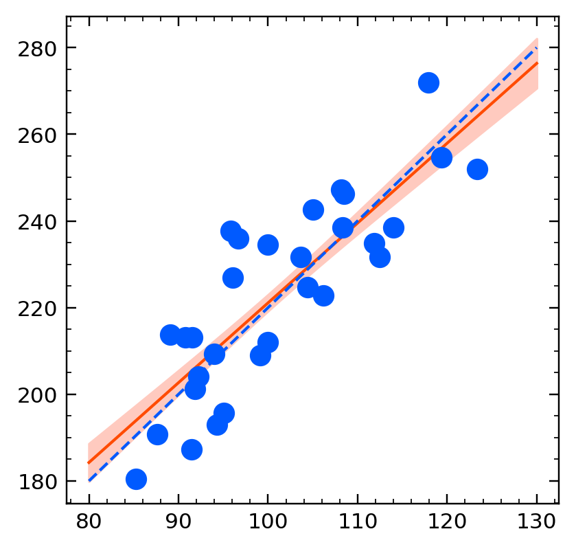
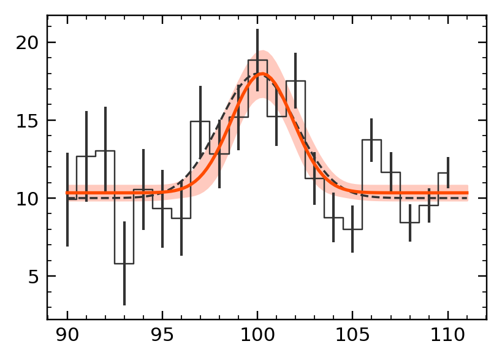

Fittingに使われるPythonモジュールの比較
1. 導入
最尤法(Maximum Likelihood Methods)を提供するデータのフィッティングに使用可能なPythonモジュールは数多くある。 これらを比較することで、 (1) 使用感の違いを見る、 (2) 使い方をメモする、 (3) 最尤値や誤差が正しく求まるか調べる ことを目的とする。 ベイズ統計やMCMCのパッケージの比較は目的としていない。
2. 比較対象のPythonモジュール
2.1. NumPy
NumPy は polynomial という多項式を扱うモジュールを提供している。
この中で fit() というメソッドが提供されており、これを使ってモデルの最適化が可能である。
内部で numpy.linalg.lstsq() という最適化関数を使っており、\( |y - Ax | \) を最小化するという説明があるものの最適化手法は不明。
物理学でよく使われる名前のついた多くの多項式を扱えるが、ガウス関数などは無いので輝線のフィッティングには使えない(と思う)。
numpy.linalg.lstsq() 自体を使えばガウス関数フィッティングもできないこともなさそうではあるが…
2.2. Scipy
SciPy は optimize という最適化のためのモジュールを提供している。
この中で curve_fit() という関数は非線形最小二乗法によりモデルの最適化を行う。
method 引数により最適化手法をLevenberg-Marquardt法、Trust Region Reflective法、dogleg法の中から選べる。
デフォルトではパラメータ範囲に制限が無ければLM法、あればTRR法が使われる。
LM法の場合は最尤推定にFortranで実装されたMINPACKというプログラムを呼び出す scipy.optimize.leastsq() を使用しており、
他の手法の場合は最尤推定に scipy.optimize.least_square() という新しい関数を使用している。
データの誤差 sigma の中に誤差の相関(共分散)を入れることもできる。
2変数の間の線形回帰は linregress() という関数でも与えられており、こちらを使えば関数を指定してやる必要がない。
ただしデータ点に誤差を与えることができない。
内部では np.cov() を使って共分散を計算し、解析解を導いているようである。
(なお linregress はlinear regressionの略だと思われる。)
2.3. Astropy
天文解析パッケージ Astropy は modeling というモジュールを提供している。
天文関係で使うと思われるモデルやフィッティングの関数、単位付き変数のフィッティングが整備されているので、
使いたいモデルが実装されていないか確認する価値がある。
modeling.models モジュールが提供するクラスを使って統計モデルを構築し、
modeling.fitting モジュールが提供するクラスを使ってモデルをデータに当て嵌める。
しかし、結局中身は scipy.optimize.least_squares() を使っている。
User Interfaceが関数ではなくクラス中心で複雑なので、それに応じた複雑なフィッティングをするのに適していると考えられる。
内部で変数変換したり scipy.optimize のフィッティング関数のアウトプットを変換したりしているので、
コードを見るとフィッティング結果をどう扱うかの勉強になるかも？
用意されているおすすめの最適化手法は、単純な線形の場合は LinearLSQFitter 、
非線形の場合は TRFLSQFitter, DogBoxLSQFitter, LMLSQFitter の3種類である。
これらの最適化手法は内部で scipy.optimize を使っているが、 LinearLSQFitter だけは例外的に numpy.linalg.lstsq() を使っている。
パラメータ範囲が指定されていない小さな最適化であれば LMLSQFitter,
範囲が指定されているなら TRFLSQFitter, DogBoxLSQFitter が良いとのこと。
アルゴリズムが不安定なので、 LMLSQFitter を使う場合はパラメータ範囲を指定できない。
2.4. specutils
天体スペクトルを扱うパッケージ specutils は輝線フィッティングを含めたスペクトル解析のためのモジュールを提供する。
フィッティングの際には内部で Astropy.modeling モジュールが呼ばれている。
ユーザーの輝線フィッティングを助けるパッケージとも言える。
2.5. MPFIT
MPFIT は古くから天文学で使われているフィッティングパッケージ。
元々はFortranで書かれた MINPACK-1 というパッケージの中のフィッティングコードをCraig MarkwardtさんがIDLで書き直した。
それをMark RiversさんがPythonで書き直し、Sergey Koposovさんが numpy で実装し直した後にPython3で動くようにした。
IDLでフィッティングといえばこのコード。
Levenberg-Marquardt法を使っているので効率良く最小二乗問題を解けるのが売りだった。
- MPFIT Documentation — eispac 0.1.dev108+gdfa97b1 documentation
- astrolibpy/mpfit/mpfit.py at master · segasai/astrolibpy · GitHub
pip でダウンロードできる形式では配布されていない。
astrolibpy をダウンロードしたあと、Pythonのパスが通っている場所に mpfit のディレクトリを置いたら良い。
たぶんディレクトリ直下に mpfit/__init__.py ファイルを設置する必要がある (空ファイルで良い)。
2.6. LMFIT
LMFIT は非線形最小二乗法を解くためのパッケージ。
scipy.optimize モジュールから着想を得て、フィッティングのための便利な機能を多数導入している。
多くのモデル、多様な最適化手法、パラメータ制御法、解の解析手法が提供されている。
基本的に最適化には scipy.optimize が内部で使われており、 例えば method='leastsq' が指定されているときは scipy.optimize.leastsq() が使用されている。
Minimizer.minimize() の説明:
In most cases, these methods wrap and use the method with the same name from `scipy.optimize`, or use `scipy.optimize.minimize` with the same `method` argument.
Getting startedで述べられている scipy.optimize.leastsq() から改善したかった点は、
- パラメータを(本質的に意味のない)数値インデックスで指定する(
p[0])のではなく、名前で指定したい(p['slope'])。 - パラメータを固定したかったら作った関数を変更しなければならない。
- パラメータ範囲を指定する方法が頑強な方法が無いし、あったとしても全パラメータの範囲を順番に指定しなければならない。
- パラメータの振舞いを制限する方法がかなり複雑 (
p['b'] = 3*p['a']としたいときなど。)。
また emcee を使って最尤推定値まわりの事後分布を得る関数も提供されている。
これはパラメータの確率分布(誤差)を調べるためであって、パラメータ推定のために用意されているわけではないと何度も注意されている。
3. 理想的な線形データのフィッティング結果
3.1. データ作成
- 平均: 100.0
- 標準偏差: 10.0
- 標本の大きさ: 30
- 直線: \(y = 2.0 (x - 100.0) + 220.0\)
# makefig() は菅原が編集した matplotlib の関数
import numpy as np from numpy.random import default_rng from sugayutils.figure import makefig rng = default_rng(222) size = 30 sigma = np.full(size, 10.0) noise = rng.standard_normal(size) * sigma x0 = 100.0 x = rng.normal(x0, 10, size=size) xn = x - x0 a, b = 2.0, 220.0 y0 = a * (x - x0) + b y = y0 + noise fig = makefig(figsize=['small', 1.0]) ax = fig.add_subplot(1, 1, 1) _ = ax.scatter(x, y)

3.2. 解析解
一次方程式の場合は解析解が得られている。 係数の最尤推定値は
\begin{align} \label{eq:1} a &= \frac{N\sum x_i y_i - \sum x_i \sum y_i}{N\sum x_i^2 - (\sum x_i)^2} \\ b &= \frac{\sum x_i^2 \sum y_i - \sum x_i \sum x_i y_i}{N\sum x_i^2 - (\sum x_i)^2} \end{align}であり、その誤差は
\begin{align} \label{eq:2} \sigma_\text{a} & = \sigma \sqrt{\frac{N}{N\sum x_i^2 - (\sum x_i)^2}} \\ \sigma_\text{b} & = \sigma \sqrt{\frac{\sum x_i^2}{N\sum x_i^2 - (\sum x_i)^2}} \\ \end{align}と表せる。
以上より最尤推定値を求める。
denom = size * np.sum(xn**2) - np.sum(xn) ** 2 sol_analytic = { 'a': (size * np.sum(xn * y) - np.sum(xn) * np.sum(y)) / denom, 'b': (np.sum(xn**2) * np.sum(y) - np.sum(xn) * np.sum(xn * y)) / denom, 's_a': sigma[0] * np.sqrt(size / denom), 's_b': sigma[0] * np.sqrt(np.sum(xn**2) / denom), } sol_analytic
{'a': 1.8419873744634017,
'b': 221.09327400439,
's_a': 0.18305375486749972,
's_b': 1.8375169284378194}
1sigma誤差の範囲に真値が収まっている。
3.3. Numpy
Polynomial.fit() を使ったフィッティング手法を示す。
デフォルトの返り値は Polynomial インスタンスである。
full=True のキーワード引数を与えるとタプルを出力し、2番目の要素にフィッティングの情報が含まれる。
from numpy.polynomial import Polynomial p, status = Polynomial.fit(xn, y, 1, w=1 / sigma, full=True) p = p.convert() sol_numpy = {'a': p.coef[1], 'b': p.coef[0], 's_a': 0.0, 's_b': 0.0} sol_numpy
{'a': 1.8419873744634028, 'b': 221.09327400438997, 's_a': 0.0, 's_b': 0.0}
最尤推定値は解析解とほとんど正確に一致したが、誤差を出力してくれないようである。
なお、 Polynomial.fit() は Polynomial クラスのクラスメソッドである。
3.4. Scipy
3.4.1. curve_fit
引数 absolute_sigma=True にすると誤差 sigma を絶対値で設定することになる。
デフォルトは absolute_sigma=False なので相対値で指定、返り値の共分散 pcov も相対値になるので注意する。
pcov の絶対値と相対値の関係は pcov(absolute_sigma=False) = pcov(absolute_sigma=True) * chisq(popt)/(M-N) 。
引数 full_output=True でフィッティングに関する細かい出力が得られる。
他にも bounds や loss など多くの引数を持つ。
from scipy.optimize import curve_fit def func(x, a, b): return a * x + b popt, pcov, infodict, mesg, ier = curve_fit( func, xn, y, sigma=sigma, absolute_sigma=True, full_output=True ) perr = np.sqrt(np.diag(pcov)) sol_scipy_curvefit = {'a': popt[0], 'b': popt[1], 's_a': perr[0], 's_b': perr[1]} sol_scipy_curvefit
{'a': 1.84198738877173,
'b': 221.09327399514368,
's_a': 0.18305375794763726,
's_b': 1.8375169220175631}
numpy.Polynomial.fit と同じ結果を示したが、解析解からの数値誤差が若干ある(実用的に何の問題もないし気にするべきではない)。
結果には示していないが、pcovの値を見ると共分散項はおよそ-0.04であり、
最適化されたパラメータ間の相関(共分散)がほとんどゼロであることが分かる。
3.4.2. linregress
引数 alternative を加えることで検定も可能らしい。
誤差 sigma を与えることはできない。
from scipy import stats res = stats.linregress(xn, y) sol_scipy_linregress = { 'a': res.slope, 'b': res.intercept, 's_a': res.stderr, 's_b': res.intercept_stderr, } sol_scipy_linregress
{'a': 1.8419873744634003,
'b': 221.09327400439,
's_a': 0.22700227671955325,
's_b': 2.2786777936788623}
最尤推定値は解析解と一致した。
誤差が解析解より少し大きいのは、おそらく内部でデータの誤差を相関係数やデータの標準偏差(標本標準偏差)から評価しているから。
実際、 np.std(noise) の値は12であり、最尤推定値の誤差も同じくらいの倍率で大きくなっている(完全に一致はしない)。
3.5. Astropy
3.5.1. LinearLSQFitter
LinearLSQFitter の場合。内部で numpy.linalg.lstsq() を使っているので誤差の出力は無し。
from astropy.modeling import models, fitting fit = fitting.LinearLSQFitter() line_init = models.Linear1D() # initial values <Linear1D(slope=1., intercept=0.)> fitted_line = fit(line_init, xn, y, weights=1 / sigma) sol_astropy_linear = {'a': fitted_line.slope.value, 'b': fitted_line.intercept.value, 's_a': 0.0, 's_b': 0.0} sol_astropy_linear
{'a': 1.8419873744634014, 'b': 221.09327400439003, 's_a': 0.0, 's_b': 0.0}
内部の実装どおり numpy.Polynomial.fit() と同じ結果が得られ、解析解と一致した。
3.5.2. LMLSQFitter
LMLSQFitter は内部で scipy.optimize.least_squares() を使っている。
引数 calc_uncertainties=True を与えるとパラメータ誤差を計算して fitted_line.cov_matrix と fitted_line.stds に値が入力される。
この引数を与えなくても、 fit['fit_info'] にフィッティングの結果は残されている。
ちなみに、 scipy.optimize.curve_fit() のデフォルトの結果を修正して、与えた誤差は絶対値 (absolute_sigma=True) になるように内部で補正されている。
from astropy.modeling import models, fitting fit = fitting.LMLSQFitter(calc_uncertainties=True) line_init = models.Linear1D() # initial values <Linear1D(slope=1., intercept=0.)> fitted_line = fit(line_init, xn, y, weights=1 / sigma) sol_astropy_LM = { 'a': fitted_line.slope.value, 'b': fitted_line.intercept.value, 's_a': fitted_line.stds['slope'], 's_b': fitted_line.stds['intercept'], } sol_astropy_LM
{'a': 1.8419873744634017,
'b': 221.09327400438997,
's_a': 0.1830537548674997,
's_b': 1.8375169284378194}
なぜか scipy.optimize.curve_fit() よりも LinearSQFitter に近い結果が得られた。
curve_fit() は内部で scipy.optimize.leastsq() を使用しており、 LMLSQFitter は scipy.optimize.least_square() を使用しているので、
内部のわずかな実装の違いが表れたのかもしれない。
もちろん、誤差の範囲ではこれらは一致している。
得られた誤差も scipy.optimize.curve_fit() に近い値が得られた。
なお、これを実行すると
WARNING: Model is linear in parameters; consider using linear fitting methods. [astropy.modeling.fitting]
という警告が出る。
線形フィッティングは LinearLSQFitter がお薦めのようである (誤差を出力してくれないのに？)。
3.6. MPFIT
コードの表記がPythonを使ううえであまり直感的ではないので、使うならさらにwrapperを作ってしまうのが便利な気がする。
from mpfit.mpfit import mpfit import numpy as np def func(p, fjac=None, x=None, y=None, err=None): y0 = p[0] * x + p[1] status = 0 return [status, (y - y0) / err] p0 = [1.0, 200.0] functkw = {'x': xn, 'y': y, 'err': sigma} m = mpfit(func, p0, functkw=functkw) sol_mpfit = { 'a': m.params[0], 'b': m.params[1], 's_a': m.perror[0], 's_b': m.perror[1], } sol_mpfit
{'a': 1.8419873769467103,
'b': 221.09327423192875,
's_a': 0.18305375489620923,
's_b': 1.8375169218509713}
同じMINPACK由来のコードと言えど他の手法とは実装が異なるので、異なる数値誤差が出た。
デフォルトではプリントメッセージが表示される。
Iter 1 CHI-SQUARE = 210.0576791 DOF = 28 P0 = 1 P1 = 200 Iter 2 CHI-SQUARE = 43.05872579 DOF = 28 P0 = 1.841987377 P1 = 221.0932742
まじか、Levenberg-Marquardt法ってIteration 1回で終わるのか… 信じられへんな…
3.7. LMFIT
3.7.1. 関数を使った書き方
書き方は MPFIT と似ているところがある。
import numpy as np import lmfit def func(p, x, data, uncertainty): y0 = p['slope'] * x + p['intercept'] return (data - y0) / uncertainty params = lmfit.create_params(slope=1.0, intercept=200.0) out = lmfit.minimize(func, params, args=(xn, y, sigma)) sol_lmfit = { 'a': out.params['slope'].value, 'b': out.params['intercept'].value, 's_a': out.params['slope'].stderr, 's_b': out.params['intercept'].stderr, } sol_lmfit
{'a': 1.8419873744056405,
'b': 221.09327400473325,
's_a': 0.22700227671667123,
's_b': 2.2786777936860263}
scipy.optimize.leastsq() を使っているが、 scipy.optimize.curve_fit() と数値誤差が完全に同じというわけではなさそう。
誤差が大きくなって scipy.stats.linregress と同じになっているが、これは 内部で勝手にデータから誤差をスケールさせている から。
scale_covar=False を指定すると他の手法と同じ結果が得られる。
スケールすること自体は悪くなはないが、自分の使っている手法が中で何をやっているかはちゃんと理解しておく必要があるだろう。
3.7.2. Modelクラスを使った書き方
同じ lmfit でも Model クラスを使った書き方もある。
既存のフィッティング関数を使ったり、それと自分のオリジナルの関数を組み合わせたりする場合はこちらが便利かもしれない。
import numpy as np from lmfit.models import LinearModel model = LinearModel() init = model.guess(y, x=xn) out = model.fit(y, init, x=xn, weights=1 / sigma) sol_lmfit2 = { 'a': out.params['slope'].value, 'b': out.params['intercept'].value, 's_a': out.params['slope'].stderr, 's_b': out.params['intercept'].stderr, } sol_lmfit2
{'a': 1.84198737447337,
'b': 221.09327400437255,
's_a': 0.22700227671776427,
's_b': 2.278677793677153}
数値誤差も含めると上の手法と完全に一致するわけではない。なぜ？
こちらも Model.fit() に scale_covar という引数がある。
3.8. まとめ
import pandas as pd data = { 'Analytic': sol_analytic, 'Numpy': sol_numpy, 'Scipy curvefit': sol_scipy_curvefit, 'Scipy linregress': sol_scipy_linregress, 'Astropy Linear': sol_astropy_linear, 'Astropy LM': sol_astropy_LM, 'MPFIT': sol_mpfit, 'LMFIT minimize': sol_lmfit, 'LMFIT Model.fit': sol_lmfit2, } pd.DataFrame.from_dict(data, orient='index')
a b s_a s_b
Analytic 1.841987 221.093274 0.183054 1.837517
Numpy 1.841987 221.093274 0.000000 0.000000
Scipy curvefit 1.841987 221.093274 0.183054 1.837517
Scipy linregress 1.841987 221.093274 0.227002 2.278678
Astropy Linear 1.841987 221.093274 0.000000 0.000000
Astropy LM 1.841987 221.093274 0.183054 1.837517
MPFIT 1.841987 221.093274 0.183054 1.837517
LMFIT minimize 1.841987 221.093274 0.227002 2.278678
LMFIT Model.fit 1.841987 221.093274 0.227002 2.278678
(誤差のスケールを除いて) 全ての数値が一致した。
3.9. 図
LMFIT は手軽にベストフィット関数の誤差範囲を示すことができる。
計算は以下のサイトに基づいているよう。
- Least squares fitting with kmpfit — Kapteyn Package (home)
(新しい
kmpfitが登場したが、さすがにもうやってられない)
scale_covar=False を与えて lmfit で計算し直した。
また、 xx - x0 をどこで使うか少し考えないといけないことに注意。
from sugayutils.core import colors as col from sugayutils.figure import makefig out = model.fit(y, init, x=xn, weights=1 / sigma, scale_covar=False) xx = np.linspace(80, 130, 101) yy = out.eval(x=xx - x0) ye = out.eval_uncertainty(x=xx - x0, sigma=1) fig = makefig(figsize=['small', 1.0]) ax = fig.add_subplot(1, 1, 1) ax.plot(xx, a * (xx - x0) + b, c='blue', ls='--', zorder=2) ax.scatter(x, y, c='blue', zorder=2) ax.plot(xx, yy, c='red', zorder=1) ax.fill_between(xx, yy - ye, yy + ye, color=col.bpink, zorder=0)
<matplotlib.collections.FillBetweenPolyCollection at 0x7fc99e5dfd40>

データを生成した新の直線を青破線、最尤推定した直線を赤実線、その誤差を淡い赤帯で示した。
4. 理想的な輝線データのフィッティング結果
4.1. データ作成
ガウス関数に従う模擬輝線データを作成する。
import numpy as np from numpy.random import default_rng rng = default_rng(222) size = 21 sigma = np.linspace(1.0, 3.0, size)[::-1] noise = rng.standard_normal(size) * sigma start = 90.0 x = np.arange(size) + start x0 = 100.0 w = 2.0 flux = 40.0 y0 = 10.0 y_line = flux * np.exp(-0.5 * (x - x0) ** 2/ w ** 2) / np.sqrt(2 * np.pi) / w y = y0 + y_line + noise sol_answer = { 'x0': x0, 'e_x0': 0.0, 'w': w, 'e_w': 0.0, 'f': flux, 'e_f': 0.0, 'y0': y0, 'e_y0': 0.0, }
ここで、厳密にはフラックスの保存を考えずにガウス関数を離散化してフィッティングしていることに注意する。 線幅sigmaが2ピクセルあるのでほとんど問題ないはずだが、線幅が細すぎる場合にはこのガウス関数の離散化はフラックスを全く保存しない。
4.2. Scipy
初期値 p0 を与えないと収束しないだろう。
from scipy.optimize import curve_fit def gauss(x, x0, w, flux, y0): y_line = flux * np.exp(-0.5 * (x - x0) ** 2 / w**2) / np.sqrt(2 * np.pi) / w return y0 + y_line p0_x0, p0_w, p0_f, p0_y0 = np.mean(y * x) / np.mean(y), 1.0, np.max(y) * 2.0, np.mean(y) p0 = [p0_x0, p0_w, p0_f, p0_y0] popt, pcov, infodict, mesg, ier = curve_fit( gauss, x, y, p0=p0, sigma=sigma, absolute_sigma=True, full_output=True ) perr = np.sqrt(np.diag(pcov)) sol_scipy = { 'x0': popt[0], 'e_x0': perr[0], 'w': popt[1], 'e_w': perr[1], 'f': popt[2], 'e_f': perr[2], 'y0': popt[3], 'e_y0': perr[3], } sol_scipy
{'x0': 100.24469301948592,
'e_x0': 0.3519444307764577,
'w': 1.6269735406285912,
'e_w': 0.37345397962760474,
'f': 31.175842723920148,
'e_f': 7.0277508837556475,
'y0': 10.337014096545635,
'e_y0': 0.4525080145096782}
4.3. Astropy
- 面積を変数に持つガウス関数を使いたいので
AreaGaussian1Dを定義する必要がある: JointFitter — Astropy v7.1.dev604+g07b8873e0。 - 輝線幅
stddevに定義域があるのでfitterはLM法ではなくTRFLSQFitterを選んだ。 - 連続光と輝線の和を足し算で定義すると、アウトプットの変数には番号 "_0" や "_1" がつく。
モデルを組むのに考えないといけないことがちょっと多くて気が逸らされそうな印象。
from astropy.modeling import models, fitting, Fittable1DModel from astropy.modeling.parameters import Parameter from astropy.modeling.functional_models import FLOAT_EPSILON class AreaGaussian1D(Fittable1DModel): area = Parameter(default=1) mean = Parameter(default=0) stddev = Parameter(default=1, bounds=(FLOAT_EPSILON, None)) @staticmethod def evaluate(x, area, mean, stddev): return (area / (stddev * np.sqrt(2 * np.pi))) * np.exp( -0.5 * (x - mean) ** 2 / stddev**2 ) line = AreaGaussian1D(area=p0_f, mean=p0_x0, stddev=p0_w) const = models.Const1D(amplitude=p0_y0) fit = fitting.TRFLSQFitter(calc_uncertainties=True) sol = fit(line + const, x, y, weights=1 / sigma) sol_astropy = { 'x0': sol.mean_0.value, 'e_x0': sol.stds['mean_0'], 'w': sol.stddev_0.value, 'e_w': sol.stds['stddev_0'], 'f': sol.area_0.value, 'e_f': sol.stds['area_0'], 'y0': sol.amplitude_1.value, 'e_y0': sol.stds['amplitude_1'], } sol_astropy
{'x0': 100.24473610204825,
'e_x0': 0.35192975287232203,
'w': 1.627041764794084,
'e_w': 0.3736855128006802,
'f': 31.176803560406576,
'e_f': 7.027771300910829,
'y0': 10.336972337844252,
'e_y0': 0.4525082896217146}
既存のモデルを使うとフィッティングをとても楽にしてくれるはずだが、 逆に自分でモデルを組まないといけない場合はちょっとめんどくさい。 (Pythonではこれくらいのユーザー定義関数を作るのはあたりまえという感覚を持っていた方がいいというのはある。)
4.4. specutils
はじめにスペクトルのオブジェクト specutils.Spectrum1D を定義する。
入力する引数(flux, spectral_axis)等は astropy.units.Quantity でないといけないので適当に定義する。
specutils.fitting.estimate_line_parameters() という関数はどうやらパラメータをざっくり推定するための関数。本来は初期値を与えるのに使えるのかもしれない。
今回のモデルは連続光が含まれているので、 specutils.fitting.fit_lines() をはじめから使う。
Spectrum1D はデータに単位を含むので、当て嵌めるモデルも単位計算に対応させる必要がある。
AreaGaussian1D に _parameter_units_for_data_units() メソッドを追加して、
各パラメータの単位を横軸の波長(インプット)と縦軸のエネルギー密度(アウトプット)の単位を使って構築してやる必要がある。
データの誤差は本来は Spectrum1D に格納しておくのが良いが、その場合は astropy.nddata.nduncertainty.StdDevUncertainty を使って誤差の性質を明示する必要がある。
フィッティングのときにこの誤差を考慮するためには、 fit_lines() で weights='unc' と引数を渡す必要がある。
weights=1/sigma のように引数を渡せば StdDevUncertainty を使う必要がないが、この場合も weights に与えられる配列は単位を持つ必要がある。
import astropy.units as u from astropy.modeling import models, fitting, Fittable1DModel from astropy.nddata.nduncertainty import StdDevUncertainty from specutils import Spectrum1D from specutils.fitting import fit_lines from specutils.manipulation import extract_region class AreaGaussian1D(Fittable1DModel): area = Parameter(default=1) mean = Parameter(default=0) stddev = Parameter(default=1, bounds=(FLOAT_EPSILON, None)) @staticmethod def evaluate(x, area, mean, stddev): return (area / (stddev * np.sqrt(2 * np.pi))) * np.exp( -0.5 * (x - mean) ** 2 / stddev**2 ) # Required def _parameter_units_for_data_units(self, inputs_unit, outputs_unit): return { "area": outputs_unit[self.outputs[0]] * inputs_unit[self.inputs[0]], "mean": inputs_unit[self.inputs[0]], "stddev": inputs_unit[self.inputs[0]], } line = AreaGaussian1D( area=p0_f * u.erg / u.s / u.cm**2, mean=p0_x0 * u.AA, stddev=p0_w * u.AA ) const = models.Const1D(amplitude=p0_y0 * u.erg / u.s / u.cm**2 / u.AA) spec = Spectrum1D( flux=y * u.erg / u.s / u.cm**2 / u.AA, spectral_axis=x * u.AA, uncertainty=StdDevUncertainty(sigma * u.erg / u.s / u.cm**2 / u.AA), ) sol = fit_lines(spec, line + const, weights='unc') sol_specutils = { 'x0': sol.mean_0.value, 'e_x0': sol.stds['mean_0'], 'w': sol.stddev_0.value, 'e_w': sol.stds['stddev_0'], 'f': sol.area_0.value, 'e_f': sol.stds['area_0'], 'y0': sol.amplitude_1.value, 'e_y0': sol.stds['amplitude_1'], } sol_specutils
{'x0': 100.24473610204825,
'e_x0': 0.35192975287232203,
'w': 1.627041764794084,
'e_w': 0.3736855128006802,
'f': 31.176803560406576,
'e_f': 7.027771300910829,
'y0': 10.336972337844252,
'e_y0': 0.4525082896217146}
総じて、フィッティングするだけならかなり面倒くさい。
specutils を使っているなら便利だが(単位もその中で自然に使うと思うので)、フィッティングをするためだけに使うにはオーバースペック。
4.5. MPFIT
from mpfit.mpfit import mpfit import numpy as np def gauss(x, x0, w, flux, y0): y_line = flux * np.exp(-0.5 * (x - x0) ** 2 / w**2) / np.sqrt(2 * np.pi) / w return y0 + y_line def func(p, fjac=None, x=None, y=None, err=None): model = gauss(x, p[0], p[1], p[2], p[3]) status = 0 return [status, (y - model) / err] p0 = [p0_x0, p0_w, p0_f, p0_y0] functkw = {'x': x, 'y': y, 'err': sigma} m = mpfit(func, p0, functkw=functkw) sol_mpfit = { 'x0': m.params[0], 'e_x0': m.perror[0], 'w': m.params[1], 'e_w': m.perror[1], 'f': m.params[2], 'e_f': m.perror[2], 'y0': m.params[3], 'e_y0': m.perror[3], } sol_mpfit
{'x0': 100.24472021324937,
'e_x0': 0.3519250939614858,
'w': 1.627045790857027,
'e_w': 0.37343125462216553,
'f': 31.17668577297413,
'e_f': 7.0274247725102175,
'y0': 10.336978317619911,
'e_y0': 0.4524998123023251}
specutils のあとに実装するとめっちゃ楽に感じる…
なお、フィッティングが収束するまでに30回iterationしている。
4.6. LMFIT
たまたま GaussianModel の引数 amplitude がフラックスに相当したので楽に実装できた。
なお、内部でピーク値 height も自動的に計算されている。誤差伝播がどこまで正しいかは知らない。
import numpy as np from lmfit.models import ConstantModel, GaussianModel const = ConstantModel() gauss = GaussianModel() model = const + gauss init = const.guess(y, x=x) init.update(gauss.guess(y, x=x)) out = model.fit(y, init, x=x, weights=1 / sigma, scale_covar=False) sol_lmfit = { 'x0': out.params['center'].value, 'e_x0': out.params['center'].stderr, 'w': out.params['sigma'].value, 'e_w': out.params['sigma'].stderr, 'f': out.params['amplitude'].value, 'e_f': out.params['amplitude'].stderr, 'y0': out.params['c'].value, 'e_y0': out.params['c'].stderr, } sol_lmfit
{'x0': 100.24474812193493,
'e_x0': 0.3519061226112018,
'w': 1.6271080677992757,
'e_w': 0.37343511682123093,
'f': 31.17740729614346,
'e_f': 7.027139625729403,
'y0': 10.336947140254642,
'e_y0': 0.4524926545009989}
4.7. まとめ
import pandas as pd data = { 'True': sol_answer, 'Scipy': sol_scipy, 'Astropy': sol_astropy, 'specutils': sol_specutils, 'MPFIT': sol_mpfit, 'LMFIT': sol_lmfit, } pd.DataFrame.from_dict(data, orient='index')
x0 e_x0 w e_w f e_f \
True 100.000000 0.000000 2.000000 0.000000 40.000000 0.000000
Scipy 100.244693 0.351944 1.626974 0.373454 31.175843 7.027751
Astropy 100.244736 0.351930 1.627042 0.373686 31.176804 7.027771
specutils 100.244736 0.351930 1.627042 0.373686 31.176804 7.027771
MPFIT 100.244720 0.351925 1.627046 0.373431 31.176686 7.027425
LMFIT 100.244748 0.351906 1.627108 0.373435 31.177407 7.027140
y0 e_y0
True 10.000000 0.000000
Scipy 10.337014 0.452508
Astropy 10.336972 0.452508
specutils 10.336972 0.452508
MPFIT 10.336978 0.452500
LMFIT 10.336947 0.452493
線形フィッティングよりも数値誤差が大きいものの、結果は全て一致した。
4.8. 図
from sugayutils.core import colors as col from sugayutils.figure import makefig xx = np.linspace(start, start + size, 101) yy = out.eval(x=xx) ye = out.eval_uncertainty(x=xx, sigma=1) fig = makefig(figsize=['small', 0.7]) ax = fig.add_subplot(1, 1, 1) ytrue = flux * np.exp(-0.5 * (xx - x0) ** 2/ w ** 2) / np.sqrt(2 * np.pi) / w + y0 ax.plot(xx, ytrue, c='black', ls='--', lw=1.0, zorder=2) ax.step(x, y, c='black', lw=0.7, where='mid', zorder=1) ax.errorbar(x, y, yerr=sigma, c='black', ls='None', zorder=2) ax.plot(xx, yy, c='red', lw=1.5, zorder=3) ax.fill_between(xx, yy - ye, yy + ye, color=col.bpink, zorder=0)
<matplotlib.collections.FillBetweenPolyCollection at 0x7f5a17df07d0>

なお、ガウス関数の面積と線幅の推定値には相関があるので、モデル関数の不定性を図示する際には
この相関関係を無視すると不定性を過小評価してしまうので注意する。
lmfit は考慮しようとしている風だが、ちゃんとできているかどうかは知らない。